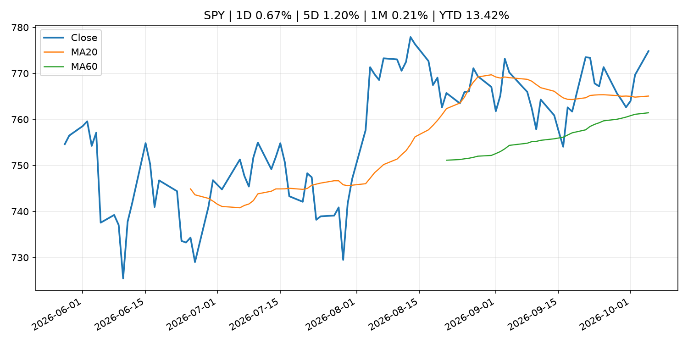
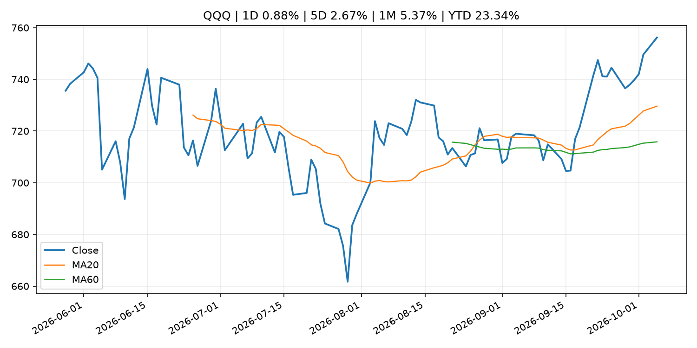
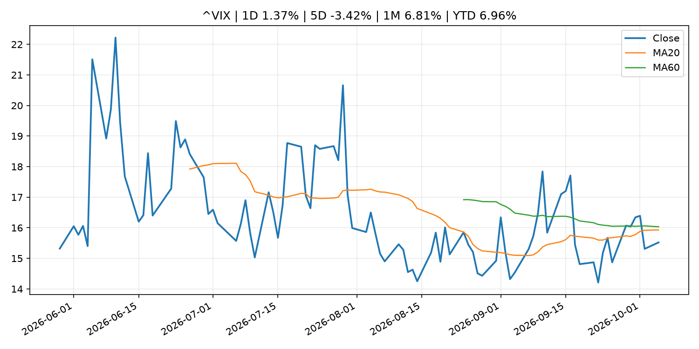
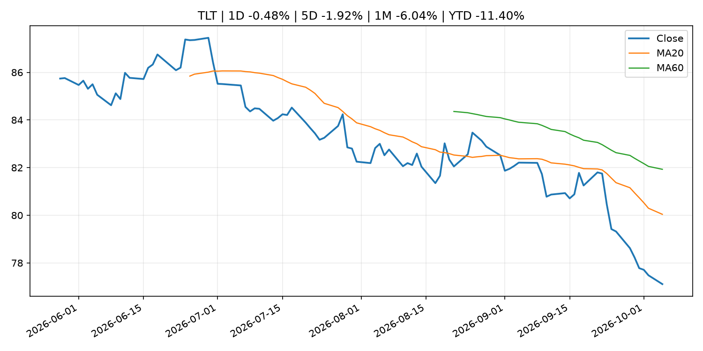
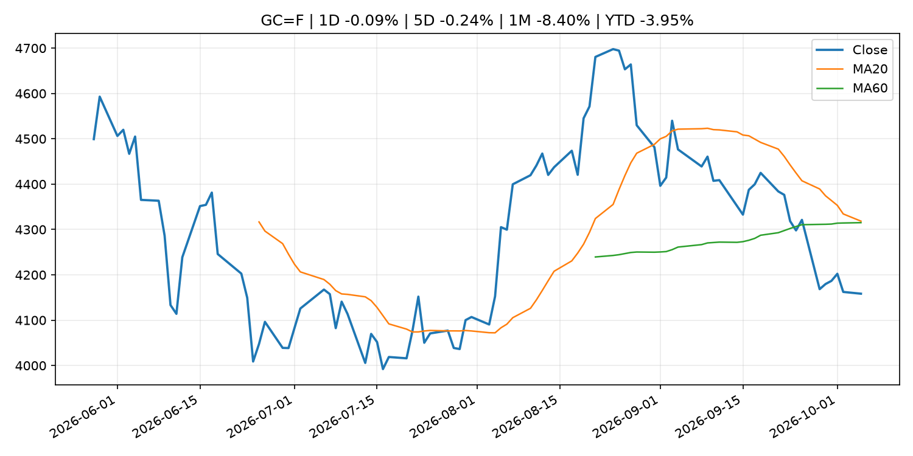
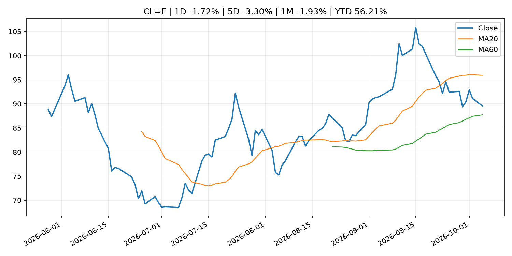
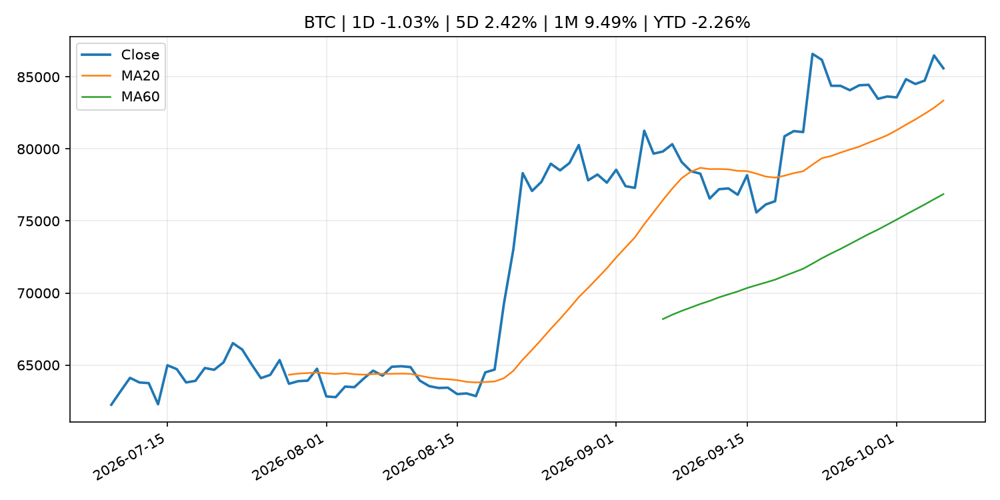
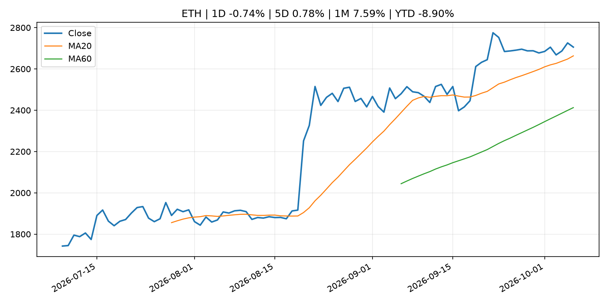
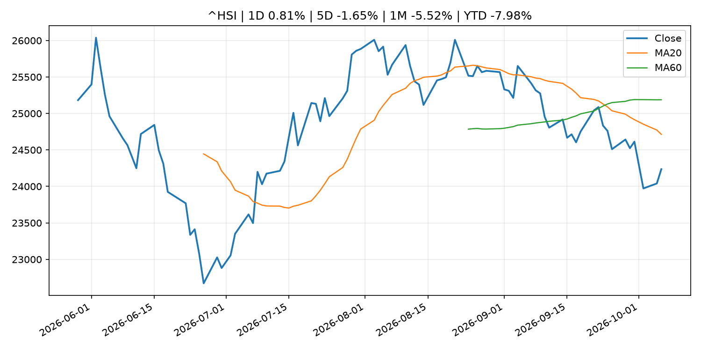

Global Macro Morning Briefing - 2026-10-06
Not financial advice / 非投资建议。
0. 今日总览
- 市场状态：unknown。市场信号不足，暂不判断明确状态。
- 今日三大主线：
- financial_stability: Ether's bitcoin-beating Q3 rally came with a catch. Liquidity thinned.
- regulation: SEC Coordinates with Global Financial Regulators to Raise Fraud Awareness During World Investor Week
- regulation: U.S. CFTC joins SEC in proposing crypto regulations, though spot-market gap lingers
- 一句话结论：今日晨报重点关注：金融稳定信号可能放大跨资产波动，并影响央行反应函数。；监管变化会改变行业盈利预期和资产风险溢价。。跨资产方面，SPY 1D 0.67%；QQQ 1D 0.88%；^VIX 1D 1.37%；TLT 1D -0.48%；GC=F 1D -0.09%；CL=F 1D -1.72%；BTC 1D -1.03%；ETH 1D -0.74%；市场信号不足，暂不判断明确状态。政策、通胀、利率、美元、美债、能源和加密监管仍是主要观察线索。所有结论仅基于公开数据与短摘要整理，不构成投资建议。
1. 隔夜跨资产市场
- 美股：SPY 1D 0.67%，QQQ 1D 0.88%，整体趋势需结合 VIX 和利率确认。
- 美债/美元：TLT 1D -0.48%，美元指数 1D 0.19%，是判断折现率压力的核心线索。
- 黄金/原油：黄金 1D -0.09%，原油 1D -1.72%，用于观察避险、通胀和地缘风险。
- 加密：BTC 1D -1.03%，ETH 1D -0.74%，关注是否独立于纳指走出加密自身行情。
- 港股/A股：恒生 1D 0.81%，沪深300/上证 1D n/a，重点看中国政策预期与人民币线索。
- 风险观察：关注后续数据是否确认当前跨资产信号。
US_EQUITY
| symbol | latest close | 1D | 5D | 1M | YTD | trend |
|---|---|---|---|---|---|---|
| SPY | 774.83 | 0.67% | 1.20% | 0.21% | 13.42% | uptrend |
| QQQ | 756.20 | 0.88% | 2.67% | 5.37% | 23.34% | strong_uptrend |
| DIA | 512.11 | 0.20% | -0.37% | -4.62% | 5.89% | strong_downtrend |
| IWM | 283.38 | 0.66% | 1.20% | -4.00% | 13.91% | downtrend |
| VTI | 380.60 | 0.69% | 1.27% | -0.09% | 13.17% | uptrend |
US_MACRO_MARKET
| symbol | latest close | 1D | 5D | 1M | YTD | trend |
|---|---|---|---|---|---|---|
| ^VIX | 15.52 | 1.37% | -3.42% | 6.81% | 6.96% | downtrend |
| DX-Y.NYB | 102.12 | 0.19% | 0.91% | 3.15% | 3.76% | strong_uptrend |
| TLT | 77.11 | -0.48% | -1.92% | -6.04% | -11.40% | strong_downtrend |
| IEF | 88.92 | -0.15% | -0.68% | -3.64% | -7.45% | strong_downtrend |
COMMODITIES
| symbol | latest close | 1D | 5D | 1M | YTD | trend |
|---|---|---|---|---|---|---|
| GC=F | 4,158.40 | -0.09% | -0.24% | -8.40% | -3.95% | range_bound |
| SI=F | 61.05 | 1.79% | -0.28% | -8.84% | -13.47% | range_bound |
| CL=F | 89.54 | -1.72% | -3.30% | -1.93% | 56.21% | range_bound |
| BZ=F | 100.50 | -1.71% | -4.54% | 5.21% | 65.43% | range_bound |
| NG=F | 3.08 | 1.42% | 2.60% | 5.66% | -14.93% | strong_uptrend |
| HG=F | 6.67 | 2.68% | 1.52% | 1.35% | 18.19% | uptrend |
HK_MARKET
| symbol | latest close | 1D | 5D | 1M | YTD | trend |
|---|---|---|---|---|---|---|
| ^HSI | 24,236.04 | 0.81% | -1.65% | -5.52% | -7.98% | strong_downtrend |
| 0700.HK | 427.60 | 1.09% | -2.77% | -3.43% | -31.36% | strong_downtrend |
| 9988.HK | 108.40 | 2.85% | 0.65% | -1.54% | -27.25% | range_bound |
| 3690.HK | 70.45 | -0.28% | -2.02% | -13.82% | -32.65% | strong_downtrend |
| 1810.HK | 23.90 | 0.08% | -7.58% | -15.96% | -40.67% | strong_downtrend |
| 1211.HK | 74.65 | 0.74% | -3.93% | -13.35% | -24.41% | strong_downtrend |
CRYPTO
| symbol | latest close | 1D | 5D | 1M | YTD | trend |
|---|---|---|---|---|---|---|
| BTC | 85,594.57 | -1.03% | 2.42% | 9.49% | -2.26% | uptrend |
| ETH | 2,705.68 | -0.74% | 0.78% | 7.59% | -8.90% | uptrend |
| SOLANA | 120.53 | -0.81% | 2.11% | 17.57% | -3.21% | uptrend |
| BINANCECOIN | 781.78 | -1.69% | 1.69% | 8.53% | -9.38% | uptrend |
| RIPPLE | 1.50 | -1.35% | 0.64% | 5.34% | -18.55% | uptrend |
2. 今日最重要的 10 条新闻
1. Ether's bitcoin-beating Q3 rally came with a catch. Liquidity thinned.
- 来源：CoinDesk
- 时间：2026-10-05T03:50:29+00:00
- 地区：global
- 事件类型：financial_stability
- 重要性层级：Tier 1
- 一句话摘要：Ether's bitcoin-beating Q3 rally came with a catch. Liquidity thinned.
- 为什么重要：金融稳定信号可能放大跨资产波动，并影响央行反应函数。
- 可能影响：可能影响利率、汇率、风险资产或大宗商品预期，但当前公开信息不足以判断明确方向。
- 资产：暂无明确资产映射
- 方向：unknown
- 强度：low
- 原因：公开信息不足以判断方向。
- 原文链接：https://www.coindesk.com/markets/2026/10/05/ether-s-bitcoin-beating-q3-rally-came-with-a-catch-liquidity-thinned
2. SEC Coordinates with Global Financial Regulators to Raise Fraud Awareness During World Investor Week
- 来源：SEC Press Releases
- 时间：2026-10-05T08:47:36-04:00
- 地区：US
- 事件类型：regulation
- 重要性层级：Tier 2
- 一句话摘要：The Securities and Exchange Commission, in coordination with other U.S. and global financial regulators, today issued a joint investor bulletin as part of World Investor Week (WIW). The bulletin encourages investors to be resilient in changing…
- 为什么重要：监管变化会改变行业盈利预期和资产风险溢价。
- 可能影响：主要影响 BTC，方向为 mixed，强度 high；加密监管或 ETF 进展会改变 BTC 的资金流和风险溢价。
- 资产：BTC 方向：mixed 强度：high 原因：加密监管或 ETF 进展会改变 BTC 的资金流和风险溢价。
- 资产：ETH 方向：mixed 强度：high 原因：监管框架会影响 ETH 产品化和机构参与度。
- 资产：COIN 方向：mixed 强度：medium 原因：监管清晰度和执法风险会影响交易平台估值。
- 资产：crypto market 方向：mixed 强度：high 原因：信息影响整个加密市场结构，但方向取决于细节。
- 原文链接：https://www.sec.gov/newsroom/press-releases/2026-101-sec-coordinates-global-financial-regulators-raise-fraud-awareness-during-world-investor-week
3. U.S. CFTC joins SEC in proposing crypto regulations, though spot-market gap lingers
- 来源：CoinDesk
- 时间：2026-10-05T15:54:23+00:00
- 地区：global
- 事件类型：regulation
- 重要性层级：Tier 2
- 一句话摘要：U.S. CFTC joins SEC in proposing crypto regulations, though spot-market gap lingers
- 为什么重要：监管变化会改变行业盈利预期和资产风险溢价。
- 可能影响：主要影响 BTC，方向为 mixed，强度 high；加密监管或 ETF 进展会改变 BTC 的资金流和风险溢价。
- 资产：BTC 方向：mixed 强度：high 原因：加密监管或 ETF 进展会改变 BTC 的资金流和风险溢价。
- 资产：ETH 方向：mixed 强度：high 原因：监管框架会影响 ETH 产品化和机构参与度。
- 资产：COIN 方向：mixed 强度：medium 原因：监管清晰度和执法风险会影响交易平台估值。
- 资产：crypto market 方向：mixed 强度：high 原因：信息影响整个加密市场结构，但方向取决于细节。
- 原文链接：https://www.coindesk.com/policy/2026/10/05/u-s-cftc-joins-sec-in-proposing-crypto-regulations-though-spot-market-gap-lingers
4. Stripe to expand stablecoin cards to over 100 countries by the end of the year
- 来源：CoinDesk
- 时间：2026-10-05T13:46:31+00:00
- 地区：global
- 事件类型：crypto_market_structure
- 重要性层级：Tier 2
- 一句话摘要：Stripe to expand stablecoin cards to over 100 countries by the end of the year
- 为什么重要：加密市场结构和监管变化会影响 BTC、ETH 及相关股票的风险溢价。
- 可能影响：主要影响 BTC，方向为 mixed，强度 high；加密监管或 ETF 进展会改变 BTC 的资金流和风险溢价。
- 资产：BTC 方向：mixed 强度：high 原因：加密监管或 ETF 进展会改变 BTC 的资金流和风险溢价。
- 资产：ETH 方向：mixed 强度：high 原因：监管框架会影响 ETH 产品化和机构参与度。
- 资产：COIN 方向：mixed 强度：medium 原因：监管清晰度和执法风险会影响交易平台估值。
- 资产：crypto market 方向：mixed 强度：high 原因：信息影响整个加密市场结构，但方向取决于细节。
- 原文链接：https://www.coindesk.com/business/2026/10/01/stripe-to-expand-stablecoin-cards-to-over-100-countries-by-the-end-of-the-year
5. SEC approves a 3x fix for bitcoin and ether traders who miss the wild swings
- 来源：CoinDesk
- 时间：2026-10-05T11:14:35+00:00
- 地区：global
- 事件类型：regulation
- 重要性层级：Tier 2
- 一句话摘要：SEC approves a 3x fix for bitcoin and ether traders who miss the wild swings
- 为什么重要：监管变化会改变行业盈利预期和资产风险溢价。
- 可能影响：主要影响 BTC，方向为 mixed，强度 high；加密监管或 ETF 进展会改变 BTC 的资金流和风险溢价。
- 资产：BTC 方向：mixed 强度：high 原因：加密监管或 ETF 进展会改变 BTC 的资金流和风险溢价。
- 资产：ETH 方向：mixed 强度：high 原因：监管框架会影响 ETH 产品化和机构参与度。
- 资产：COIN 方向：mixed 强度：medium 原因：监管清晰度和执法风险会影响交易平台估值。
- 资产：crypto market 方向：mixed 强度：high 原因：信息影响整个加密市场结构，但方向取决于细节。
- 原文链接：https://www.coindesk.com/daybook-us/2026/10/05/sec-approves-a-3x-fix-for-bitcoin-and-ether-traders-who-miss-the-wild-swings
6. Opening Remarks by Deputy Governor UCHIDA at the ECONDAT 2026 Fall Meeting (AI, Big Data, and Monetary Policy)
- 来源：Bank of Japan Announcements
- 时间：2026-10-05T09:20:00+09:00
- 地区：Japan
- 事件类型：central_bank_speech
- 重要性层级：Tier 2
- 一句话摘要：Opening Remarks by Deputy Governor UCHIDA at the ECONDAT 2026 Fall Meeting (AI, Big Data, and Monetary Policy)
- 为什么重要：央行官员表态可能影响市场对下一次会议的定价。
- 可能影响：可能影响利率、汇率、风险资产或大宗商品预期，但当前公开信息不足以判断明确方向。
- 资产：暂无明确资产映射
- 方向：unknown
- 强度：low
- 原因：公开信息不足以判断方向。
- 原文链接：http://www.boj.or.jp/en/about/press/koen_2026/ko261005a.htm
7. Federal Reserve Board announces approval of application by Isabella Bank Corporation
- 来源：Federal Reserve Press Releases
- 时间：2026-10-05T20:30:00+00:00
- 地区：US
- 事件类型：other
- 重要性层级：Tier 3
- 一句话摘要：Federal Reserve Board announces approval of application by Isabella Bank Corporation
- 为什么重要：这条信息暂未匹配到重大宏观、政策或市场事件，更适合作为背景跟踪。
- 可能影响：更偏背景信息，短期市场影响可能有限。
- 资产：暂无明确资产映射
- 方向：unknown
- 强度：low
- 原因：公开信息不足以判断方向。
- 原文链接：https://www.federalreserve.gov/newsevents/pressreleases/orders20261005a.htm
8. ‘People in the U.S. need to wake up’: As a mortgage loan officer, I rejected wealthy couples due to overspending. We’re all heading for trouble.
- 来源：MarketWatch Top Stories
- 时间：2026-10-05T23:30:00+00:00
- 地区：US
- 事件类型：other
- 重要性层级：Tier 3
- 一句话摘要：A reader writes: “We’d better get real quick or we’re going to have a financial crisis that makes the Great Recession of 2008 look like a picnic.”
- 为什么重要：这条信息暂未匹配到重大宏观、政策或市场事件，更适合作为背景跟踪。
- 可能影响：更偏背景信息，短期市场影响可能有限。
- 资产：暂无明确资产映射
- 方向：unknown
- 强度：low
- 原因：公开信息不足以判断方向。
- 原文链接：https://www.marketwatch.com/story/people-in-the-u-s-need-to-wake-up-as-a-mortgage-loan-officer-i-rejected-wealthy-couples-due-to-overspending-were-all-heading-for-trouble-6a52e04e?mod=mw_rss_topstories
3. 政策与央行观察
1. Ether's bitcoin-beating Q3 rally came with a catch. Liquidity thinned.
- 来源：CoinDesk
- 时间：2026-10-05T03:50:29+00:00
- 地区：global
- 事件类型：financial_stability
- 重要性层级：Tier 1
- 一句话摘要：Ether's bitcoin-beating Q3 rally came with a catch. Liquidity thinned.
- 为什么重要：金融稳定信号可能放大跨资产波动，并影响央行反应函数。
- 可能影响：可能影响利率、汇率、风险资产或大宗商品预期，但当前公开信息不足以判断明确方向。
- 资产：暂无明确资产映射
- 方向：unknown
- 强度：low
- 原因：公开信息不足以判断方向。
- 原文链接：https://www.coindesk.com/markets/2026/10/05/ether-s-bitcoin-beating-q3-rally-came-with-a-catch-liquidity-thinned
2. SEC Coordinates with Global Financial Regulators to Raise Fraud Awareness During World Investor Week
- 来源：SEC Press Releases
- 时间：2026-10-05T08:47:36-04:00
- 地区：US
- 事件类型：regulation
- 重要性层级：Tier 2
- 一句话摘要：The Securities and Exchange Commission, in coordination with other U.S. and global financial regulators, today issued a joint investor bulletin as part of World Investor Week (WIW). The bulletin encourages investors to be resilient in changing…
- 为什么重要：监管变化会改变行业盈利预期和资产风险溢价。
- 可能影响：主要影响 BTC，方向为 mixed，强度 high；加密监管或 ETF 进展会改变 BTC 的资金流和风险溢价。
- 资产：BTC 方向：mixed 强度：high 原因：加密监管或 ETF 进展会改变 BTC 的资金流和风险溢价。
- 资产：ETH 方向：mixed 强度：high 原因：监管框架会影响 ETH 产品化和机构参与度。
- 资产：COIN 方向：mixed 强度：medium 原因：监管清晰度和执法风险会影响交易平台估值。
- 资产：crypto market 方向：mixed 强度：high 原因：信息影响整个加密市场结构，但方向取决于细节。
- 原文链接：https://www.sec.gov/newsroom/press-releases/2026-101-sec-coordinates-global-financial-regulators-raise-fraud-awareness-during-world-investor-week
3. U.S. CFTC joins SEC in proposing crypto regulations, though spot-market gap lingers
- 来源：CoinDesk
- 时间：2026-10-05T15:54:23+00:00
- 地区：global
- 事件类型：regulation
- 重要性层级：Tier 2
- 一句话摘要：U.S. CFTC joins SEC in proposing crypto regulations, though spot-market gap lingers
- 为什么重要：监管变化会改变行业盈利预期和资产风险溢价。
- 可能影响：主要影响 BTC，方向为 mixed，强度 high；加密监管或 ETF 进展会改变 BTC 的资金流和风险溢价。
- 资产：BTC 方向：mixed 强度：high 原因：加密监管或 ETF 进展会改变 BTC 的资金流和风险溢价。
- 资产：ETH 方向：mixed 强度：high 原因：监管框架会影响 ETH 产品化和机构参与度。
- 资产：COIN 方向：mixed 强度：medium 原因：监管清晰度和执法风险会影响交易平台估值。
- 资产：crypto market 方向：mixed 强度：high 原因：信息影响整个加密市场结构，但方向取决于细节。
- 原文链接：https://www.coindesk.com/policy/2026/10/05/u-s-cftc-joins-sec-in-proposing-crypto-regulations-though-spot-market-gap-lingers
4. Stripe to expand stablecoin cards to over 100 countries by the end of the year
- 来源：CoinDesk
- 时间：2026-10-05T13:46:31+00:00
- 地区：global
- 事件类型：crypto_market_structure
- 重要性层级：Tier 2
- 一句话摘要：Stripe to expand stablecoin cards to over 100 countries by the end of the year
- 为什么重要：加密市场结构和监管变化会影响 BTC、ETH 及相关股票的风险溢价。
- 可能影响：主要影响 BTC，方向为 mixed，强度 high；加密监管或 ETF 进展会改变 BTC 的资金流和风险溢价。
- 资产：BTC 方向：mixed 强度：high 原因：加密监管或 ETF 进展会改变 BTC 的资金流和风险溢价。
- 资产：ETH 方向：mixed 强度：high 原因：监管框架会影响 ETH 产品化和机构参与度。
- 资产：COIN 方向：mixed 强度：medium 原因：监管清晰度和执法风险会影响交易平台估值。
- 资产：crypto market 方向：mixed 强度：high 原因：信息影响整个加密市场结构，但方向取决于细节。
- 原文链接：https://www.coindesk.com/business/2026/10/01/stripe-to-expand-stablecoin-cards-to-over-100-countries-by-the-end-of-the-year
5. SEC approves a 3x fix for bitcoin and ether traders who miss the wild swings
- 来源：CoinDesk
- 时间：2026-10-05T11:14:35+00:00
- 地区：global
- 事件类型：regulation
- 重要性层级：Tier 2
- 一句话摘要：SEC approves a 3x fix for bitcoin and ether traders who miss the wild swings
- 为什么重要：监管变化会改变行业盈利预期和资产风险溢价。
- 可能影响：主要影响 BTC，方向为 mixed，强度 high；加密监管或 ETF 进展会改变 BTC 的资金流和风险溢价。
- 资产：BTC 方向：mixed 强度：high 原因：加密监管或 ETF 进展会改变 BTC 的资金流和风险溢价。
- 资产：ETH 方向：mixed 强度：high 原因：监管框架会影响 ETH 产品化和机构参与度。
- 资产：COIN 方向：mixed 强度：medium 原因：监管清晰度和执法风险会影响交易平台估值。
- 资产：crypto market 方向：mixed 强度：high 原因：信息影响整个加密市场结构，但方向取决于细节。
- 原文链接：https://www.coindesk.com/daybook-us/2026/10/05/sec-approves-a-3x-fix-for-bitcoin-and-ether-traders-who-miss-the-wild-swings
6. Opening Remarks by Deputy Governor UCHIDA at the ECONDAT 2026 Fall Meeting (AI, Big Data, and Monetary Policy)
- 来源：Bank of Japan Announcements
- 时间：2026-10-05T09:20:00+09:00
- 地区：Japan
- 事件类型：central_bank_speech
- 重要性层级：Tier 2
- 一句话摘要：Opening Remarks by Deputy Governor UCHIDA at the ECONDAT 2026 Fall Meeting (AI, Big Data, and Monetary Policy)
- 为什么重要：央行官员表态可能影响市场对下一次会议的定价。
- 可能影响：可能影响利率、汇率、风险资产或大宗商品预期，但当前公开信息不足以判断明确方向。
- 资产：暂无明确资产映射
- 方向：unknown
- 强度：low
- 原因：公开信息不足以判断方向。
- 原文链接：http://www.boj.or.jp/en/about/press/koen_2026/ko261005a.htm
4. 市场异动与图表
- SPY 上涨 0.67%
- QQQ 上涨 0.88%
- TLT 下跌 -0.48%
- Oil 下跌 -1.72%
SPY

QQQ

^VIX

TLT

GC=F

CL=F

BTC

ETH

^HSI

5. 华尔街与机构公开观点
- 暂无可靠公开观点。
6. 今日重点关注
- 经济数据：经济数据：暂无可靠公开日历数据；如配置经济日历源后可自动填充。
- 央行讲话：央行讲话：暂无可靠公开日历数据；重点跟踪 Fed、ECB、BoJ、PBOC 官网 RSS。
- 财报：财报：暂无可靠数据。
- 政策事件：政策事件：暂无可靠数据。
- 风险提醒：风险提醒：关注数据源失败项、突发地缘风险、利率和美元的二阶反应。
7. 英文金融表达与宏观概念
- risk-off：避险模式，资金偏向美元、国债、黄金等防御资产。 例句：A geopolitical shock can push markets into risk-off mode.
- market structure：市场结构，指交易、托管、清算、ETF、监管等制度安排。 例句：Crypto market structure rules can affect institutional participation.
- inflation expectations：通胀预期，指家庭、企业或市场对未来通胀的预估。 例句：Inflation expectations can shape wage bargaining and bond yields.
- real yield：实际收益率，名义利率扣除通胀预期后的收益率。 例句：Gold often reacts more to real yields than nominal yields.
- terminal rate：终端利率，市场预期本轮加息周期的最高政策利率。 例句：A higher terminal rate can pressure growth stocks.
- soft landing：软着陆，指通胀回落而经济避免明显衰退。 例句：Markets often rally when data support a soft landing.
8. 背景材料
- ‘People in the U.S. need to wake up’: As a mortgage loan officer, I rejected wealthy couples due to overspending. We’re all heading for trouble.（MarketWatch Top Stories，other）：A reader writes: “We’d better get real quick or we’re going to have a financial crisis that makes the Great Recession of 2008 look like a picnic.”
- Federal Reserve Board announces approval of application by Isabella Bank Corporation（Federal Reserve Press Releases，other）：Federal Reserve Board announces approval of application by Isabella Bank Corporation
- An XRP treasury SPAC surges nearly 300% ahead of Evernorth merger（CoinDesk，other）：An XRP treasury SPAC surges nearly 300% ahead of Evernorth merger
- Treasury crackdown exposes crypto's role in $2 million Hamas fundraising network（CoinDesk，other）：Treasury crackdown exposes crypto's role in $2 million Hamas fundraising network
- Metaplanet added 1,000 bitcoin net in the third quarter bringing holdings to 44,000 BTC（CoinDesk，other）：Metaplanet added 1,000 bitcoin net in the third quarter bringing holdings to 44,000 BTC
- Bitcoin resilience tested as U.S. dollar climbs to 18-month high（CoinDesk，other）：Bitcoin resilience tested as U.S. dollar climbs to 18-month high
- Live updates: Bitcoin under pressure as rates continue to rise（CoinDesk，other）：Live updates: Bitcoin under pressure as rates continue to rise
- Technicals signal bitcoin shift, Ethereum gears up for Glamsterdam: Crypto Week Ahead（CoinDesk，other）：Technicals signal bitcoin shift, Ethereum gears up for Glamsterdam: Crypto Week Ahead
- Philip R. Lane: Diagnostic Challenges for ECB Monetary Policy（ECB Press Releases，other）：Philip R. Lane: Diagnostic Challenges for ECB Monetary Policy
- Bitcoin is about to get a major bullish signal it hasn't had in over a year（CoinDesk，other）：Bitcoin is about to get a major bullish signal it hasn't had in over a year
- Output Gap, Potential Growth Rate, and Labor Market Indicators（Bank of Japan Announcements，other）：Output Gap, Potential Growth Rate, and Labor Market Indicators
- Zcash’s 25-second blocks go live on public testnet ahead of schedule（CoinDesk，other）：Zcash’s 25-second blocks go live on public testnet ahead of schedule
- Bitcoin zooms toward $87,000, nearly setting an eight-month high, then reverses（CoinDesk，other）：Bitcoin zooms toward $87,000, nearly setting an eight-month high, then reverses
- 8th Conference on Nontraditional Data, Machine Learning, and Natural Language Processing in Macroeconomics (ECONDAT 2026 Fall Meeting)（Bank of Japan Announcements，other）：8th Conference on Nontraditional Data, Machine Learning, and Natural Language Processing in Macroeconomics (ECONDAT 2026 Fall Meeting)
- Sources of Changes in Current Account Balances (Projections for Oct.)（Bank of Japan Announcements，other）：Sources of Changes in Current Account Balances (Projections for Oct.)
9. 数据源、失败项与免责声明
- 采集时间：2026-10-06T02:04:52
- 数据源：公开 RSS、Yahoo Finance、CoinGecko、AKShare、FRED、SEC data.sec.gov，以及用户自有 inputs/reports 文件。
- 合规说明：不绕过 WSJ、Bloomberg、FT、Reuters 等付费墙；对付费媒体只使用公开 RSS 标题、摘要、链接和发布时间。
- 免责声明：Not financial advice / 非投资建议。本项目仅供个人学习、研究和信息整理，不构成投资建议、交易建议或任何收益承诺。
- 失败或跳过的数据源：
- crypto data failed coin=dogecoin
- China market data failed symbol=上证指数: empty dataframe
- China market data failed symbol=深证成指: empty dataframe
- China market data failed symbol=创业板指: empty dataframe
- China market data failed symbol=沪深300: empty dataframe
- China market data failed symbol=中证500: empty dataframe
- China market data failed symbol=科创50: empty dataframe
- FRED_API_KEY not set; skipping FRED macro series
- SEC failed cik=0000320193
- SEC failed cik=0000789019
- SEC failed cik=0001045810
- SEC failed cik=0001318605
- SEC failed cik=0001577552